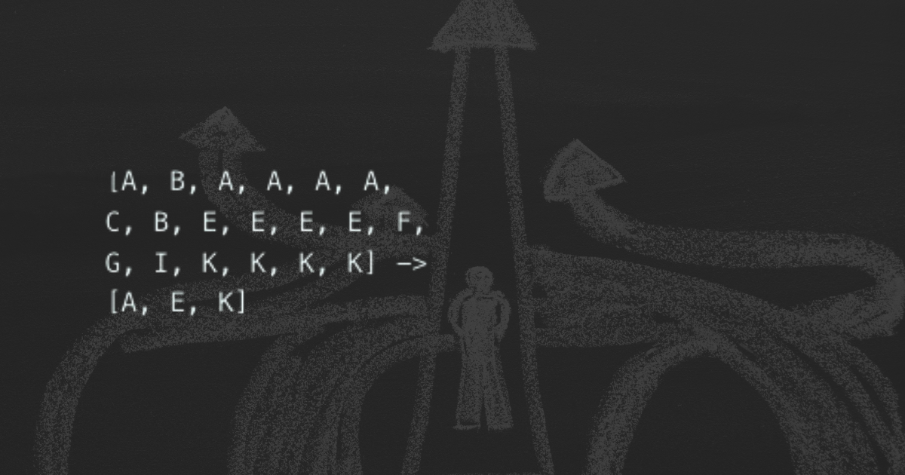

Autocorrection And Text To Speech
Confronting Imperfections with Resolve
In the crucible of real-world application, HandLexa confronts the imperfections inherent to the realm of data and computation with steadfast resolve. Central to this endeavor is the integration of robust mechanisms for post-processing refinement and user feedback. Autocorrection emerges as the vanguard of precision, tirelessly scrutinizing predicted outputs against a corpus of linguistic norms, rectifying anomalies with surgical precision.
Alchemy of Contextual Analysis
Through the alchemy of contextual analysis and linguistic semantics, HandLexa's autocorrection module imbues each interpretation with the hallmarks of grammatical integrity and syntactic coherence. Meanwhile, the harmonious integration of a browser-based text-to-speech (TTS) API breathes life into textual interpretations, transforming them into resounding echoes of auditory communication.
Transcending Functionality
As each word springs forth from the digital realm into the realm of human perception, HandLexa's text-to-speech capabilities transcend mere functionality, embodying a testament to inclusivity and accessibility. Together, autocorrection and text-to-speech capabilities form the cornerstone of HandLexa's commitment to universal accessibility, fostering a world where communication knows no boundaries.
Resilience and Adaptability
In the dynamic landscape of real-world application, HandLexa encounters a myriad of challenges, from variability in lighting conditions to the intricacies of individual signing styles. However, it is through these challenges that HandLexa's resilience and adaptability shine brightest. By integrating robust mechanisms for post-processing refinement and user feedback, HandLexa navigates the complexities of sign language interpretation with confidence and precision.
Autocorrection: Ensuring Linguistic Integrity
At the forefront of HandLexa's post-processing arsenal is its autocorrection module—a sophisticated algorithmic engine designed to rectify errors and anomalies in predicted outputs. Drawing upon a corpus of linguistic norms, HandLexa's autocorrection mechanism meticulously evaluates each interpretation, ensuring grammatical integrity and syntactic coherence.
Precision Refinement
Through contextual analysis and semantic understanding, HandLexa's autocorrection module operates with surgical precision, refining interpretations with an eye for detail that rivals human scrutiny. Whether correcting minor grammatical errors or rephrasing ambiguous phrases, HandLexa's autocorrection capabilities elevate the quality and clarity of its translations, fostering a deeper understanding between signers and their interlocutors.
Text-to-Speech Integration
Meanwhile, HandLexa's integration of a browser-based text-to-speech (TTS) API represents a leap forward in accessibility and inclusivity. By converting textual interpretations into audible speech, HandLexa bridges the gap between the digital and auditory realms, empowering users with hearing impairments to engage fully in conversations and interactions.
From Text to Speech
As each word is synthesized into spoken language, HandLexa's text-to-speech capabilities imbue interpretations with a sense of immediacy and presence, transforming textual outputs into resounding echoes of auditory communication. This seamless transition from text to speech not only enhances the accessibility of HandLexa's translations but also fosters a deeper sense of connection and understanding.
Commitment to Universal Accessibility
Moreover, HandLexa's commitment to universal accessibility extends beyond technical functionality to encompass a philosophy of inclusivity and empowerment. By prioritizing user feedback and iterative improvement, HandLexa strives to create a world where communication knows no boundaries—where individuals of all abilities can engage in meaningful dialogue and connection.
Harmonizing Precision and Accessibility
In the symphony of sign language interpretation, autocorrection and text-to-speech capabilities stand as virtuosic performers, harmonizing precision, clarity, and accessibility. Through their seamless integration into HandLexa's interpretive framework, these mechanisms elevate the quality of translations and empower users to communicate with confidence and fluency.